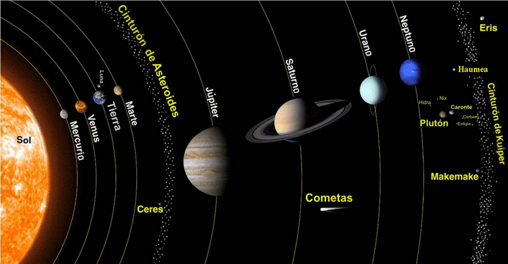

Sistema Solar
postado em: O sistema solar é um aglomerado de planetas, meteoroides, cometas, e vários outros corpos celestes em torno de uma estrela: o Sol.
O sistema solar é um aglomerado de planetas, meteoroides, cometas, e vários outros corpos celestes em torno de uma estrela: o Sol.
Betelgeuse é uma estrela supergigante vermelha, e uma das maiores estrelas conhecidas, sendo de grande interesse para a astronomia. O diâmetro angular de Betelgeuse foi medido pela primeira vez em 1920-1921 por Michelson e Pease, sendo uma das cinco primeiras a serem medidas usando um interferómetro no telescópio de 100 polegadas do Monte Wilson. O seu diâmetro varia entre 887 ± 203[1] e 1180 vezes o do Sol.[2] No diâmetro máximo, a estrela seria maior que a órbita de Saturno se colocada no lugar do Sol. Apesar de ser apenas 14 vezes mais massiva que o Sol, é cerca de algumas centenas de milhões de vezes maior em volume, como uma bola de futebol comparada a um grande estádio de futebol. A sua proximidade à Terra e o seu enorme tamanho fazem dela a estrela com o terceiro maior diâmetro angular vista da Terra [1], menor apenas que o Sol e R Doradus. É uma das 12 estrelas cujos discos reais podem ser visualizados com telescópios atuais. Betelgeuse possui uma temperatura à superfície de cerca de 3.500 K.[3]